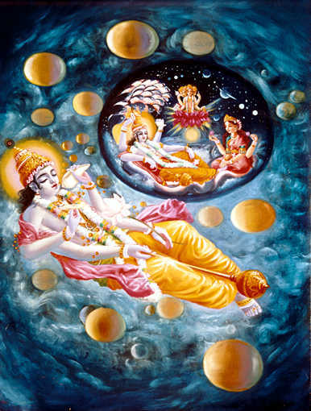

Chapter 5: Bhāgavatam Is the Answer to All Questions
2.10.1 — Śrī Śukadeva Gosvāmī said: In the Śrīmad-Bhāgavatam there are ten divisions of statements regarding the following: the creation of the universe, subcreation, planetary systems, protection by the Lord, the creative impetus, the change of Manus, the science of God, returning home, back to Godhead, liberation, and the summum bonum.
2.10.2 — To isolate the transcendence of the summum bonum, the symptoms of the rest are described sometimes by Vedic inference, sometimes by direct explanation, and sometimes by summary explanations given by the great sages.
2.10.3 — The elementary creation of sixteen items of matter — namely the five elements [fire, water, land, air and sky], sound, form, taste, smell, touch, and the eyes, ears, nose, tongue, skin and mind — is known as sarga, whereas subsequent resultant interaction of the modes of material nature is called visarga.
2.10.4 — The right situation for the living entities is to obey the laws of the Lord and thus be in perfect peace of mind under the protection of the Supreme Personality of Godhead. The Manus and their laws are meant to give right direction in life. The impetus for activity is the desire for fruitive work.
2.10.5 — The science of God describes the incarnations of the Personality of Godhead and His different activities together with the activities of His great devotees.
2.10.6 — The merging of the living entity, along with his conditional living tendency, with the mystic lying down of the Mahā-Viṣṇu is called the winding up of the cosmic manifestation. Liberation is the permanent situation of the form of the living entity after he gives up the changeable gross and subtle material bodies.
2.10.7 — The supreme one who is celebrated as the Supreme Being or the Supreme Soul is the supreme source of the cosmic manifestation as well as its reservoir and winding up. Thus He is the Supreme Fountainhead, the Absolute Truth.
2.10.8 — The individual person possessing different instruments of senses is called the adhyātmic person, and the individual controlling deity of the senses is called adhidaivic. The embodiment seen on the eyeballs is called the adhibhautic person.
2.10.9 — All three of the above-mentioned stages of different living entities are interdependent. In the absence of one, another is not understood. But the Supreme Being who sees every one of them as the shelter of the shelter is independent of all, and therefore He is the supreme shelter.
2.10.10 — After separating the different universes, the gigantic universal form of the Lord [Mahā-Viṣṇu], which came out of the Causal Ocean, the place of appearance for the first puruṣa-avatāra, entered into each of the separate universes, desiring to lie on the created transcendental water [Garbhodaka].

2.10.11 — That Supreme Person is not impersonal and therefore is distinctively a nara, or person. Therefore the transcendental water created from the Supreme Nara is known as nāra. And because He lies down on that water, He is known as Nārāyaṇa.
2.10.12 — One should definitely know that all material ingredients, activities, time and modes, and the living entities who are meant to enjoy them all, exist by His mercy only, and as soon as He does not care for them, everything becomes nonexistent.
2.10.13 — The Lord, while lying on His bed of mystic slumber, generated the seminal symbol, golden in hue, through external energy out of His desire to manifest varieties of living entities from Himself alone.
2.10.14 — Just hear from me how the potency of His Lordship divides one into three, called the controlling entities, the controlled entities and the material bodies, in the manner mentioned above.
2.10.15 — From the sky situated within the transcendental body of the manifesting Mahā-Viṣṇu, sense energy, mental force and bodily strength are all generated, as well as the sum total of the fountainhead of the total living force.
2.10.16 — As the followers of a king follow their lord, similarly when the total energy is in motion, all other living entities move, and when the total energy stops endeavoring, all other living entities stop sensual activities.
2.10.17 — The living force, being agitated by the virāṭ-puruṣa, generated hunger and thirst, and when He desired to drink and eat, the mouth opened.
2.10.18 — From the mouth the palate became manifested, and thereupon the tongue was also generated. After this all the different tastes came into existence so that the tongue can relish them.
2.10.19 — When the Supreme desired to speak, speeches were vibrated from the mouth. Then the controlling deity Fire was generated from the mouth. But when He was lying in the water, all these functions remained suspended.
2.10.20 — Thereafter, when the supreme puruṣa desired to smell odors, the nostrils and respiration were generated, the nasal instrument and odors came into existence, and the controlling deity of air, carrying smell, also became manifested.
2.10.21 — Thus when everything existed in darkness, the Lord desired to see Himself and all that was created. Then the eyes, the illuminating god Sun, the power of vision and the object of sight all became manifested.
2.10.22 — By development of the desire of the great sages to know, the ears, the power of hearing, the controlling deity of hearing, and the objects of hearing became manifested. The great sages desired to hear about the Self.
2.10.23 — When there was a desire to perceive the physical characteristics of matter, such as softness, hardness, warmth, cold, lightness and heaviness, the background of sensation, the skin, the skin pores, the hairs on the body and their controlling deities (the trees) were generated. Within and outside the skin is a covering of air through which sense perception became prominent.
2.10.24 — Thereafter when the Supreme Person desired to perform varieties of work, the two hands and their controlling strength, and Indra, the demigod in heaven, became manifested, as also the acts dependent on both the hands and the demigod.
2.10.25 — Thereupon, because of His desiring to control movement, His legs became manifested, and from the legs the controlling deity named Viṣṇu was generated. By His personal supervision of this act, all varieties of human being are busily engaged in dutiful occupational sacrifice.
2.10.26 — Thereupon, for sexual pleasure, begetting offspring and tasting heavenly nectar, the Lord developed the genitals, and thus there is the genital organ and its controlling deity, the Prajāpati. The object of sexual pleasure and the controlling deity are under the control of the genitals of the Lord.
2.10.27 — Thereafter, when He desired to evacuate the refuse of eatables, the evacuating hole, anus, and the sensory organ thereof developed along with the controlling deity Mitra. The sensory organ and the evacuating substance are both under the shelter of the controlling deity.
2.10.28 — Thereafter, when He desired to move from one body to another, the navel and the air of departure and death were combinedly created. The navel is the shelter for both, namely death and the separating force.
2.10.29 — When there was a desire to have food and drink, the abdomen and the intestines and also the arteries became manifested. The rivers and seas are the source of their sustenance and metabolism.
2.10.30 — When there was a desire to think about the activities of His own energy, then the heart (the seat of the mind), the mind, the moon, determination and all desire became manifested.
2.10.31 — The seven elements of the body, namely the thin layer on the skin, the skin itself, the flesh, blood, fat, marrow and bone, are all made of earth, water and fire, whereas the life breath is produced by the sky, water and air.
2.10.32 — The sense organs are attached to the modes of material nature, and the modes of material nature are products of the false ego. The mind is subjected to all kinds of material experiences (happiness and distress), and the intelligence is the feature of the mind’s deliberation.
2.10.33 — Thus by all this, the external feature of the Personality of Godhead is covered by gross forms such as those of planets, which were explained to you by me.
2.10.34 — Therefore beyond this [gross manifestation] is a transcendental manifestation finer than the finest form. It has no beginning, no intermediate stage and no end; therefore it is beyond the limits of expression or mental speculation and is distinct from the material conception.
2.10.35 — Neither of the above forms of the Lord, as just described unto you from the material angle of vision, is accepted by the pure devotees of the Lord who know Him well.
2.10.36 — He, the Personality of Godhead, manifests Himself in a transcendental form, being the subject of His transcendental name, quality, pastimes, entourage and transcendental variegatedness. Although He is unaffected by all such activities, He appears to be so engaged.
2.10.37-40 — O King, know from me that all living entities are created by the Supreme Lord according to their past deeds. This includes Brahmā and his sons like Dakṣa, the periodical heads like Vaivasvata Manu, the demigods like Indra, Candra and Varuṇa, the great sages like Bhṛgu, Vyāsa and Vasiṣṭha, the inhabitants of Pitṛloka and Siddhaloka, the Cāraṇas, Gandharvas, Vidyādharas, Asuras, Yakṣas, Kinnaras and angels, the serpentines, the monkey-shaped Kimpuruṣas, the human beings, the inhabitants of Mātṛloka, the demons, Piśācas, ghosts, spirits, lunatics and evil spirits, the good and evil stars, the goblins, the animals in the forest, the birds, the household animals, the reptiles, the mountains, the moving and standing living entities, the living entities born from embryos, from eggs, from perspiration and from seeds, and all others, whether they be in the water, land or sky, in happiness, in distress or in mixed happiness and distress. All of them, according to their past deeds, are created by the Supreme Lord.
2.10.41 — According to the different modes of material nature — the mode of goodness, the mode of passion and the mode of darkness — there are different living creatures, who are known as demigods, human beings and hellish living entities. O King, even a particular mode of nature, being mixed with the other two, is divided into three, and thus each kind of living creature is influenced by the other modes and acquires its habits also.
2.10.42 — He, the Personality of Godhead, as the maintainer of all in the universe, appears in different incarnations after establishing the creation, and thus He reclaims all kinds of conditioned souls amongst the humans, the nonhumans and the demigods.
2.10.43 — Thereafter, at the end of the millennium, the Lord Himself in the form of Rudra, the destroyer, will annihilate the complete creation as the wind displaces the clouds.
2.10.44 — The great transcendentalists thus describe the activities of the Supreme Personality of Godhead, but the pure devotees deserve to see more glorious things in transcendence, beyond these features.
2.10.45 — There is no direct engineering by the Lord for the creation and destruction of the material world. What is described in the Vedas about His direct interference is simply to counteract the idea that material nature is the creator.
2.10.46 — This process of creation and annihilation described in summary herein is the regulative principle during the duration of Brahmā’s one day. It is also the regulative principle in the creation of mahat, in which the material nature is dispersed.
2.10.47 — O King, I shall in due course explain the measurement of time in its gross and subtle features with the specific symptoms of each, but for the present let me explain unto you the Pādma-kalpa.